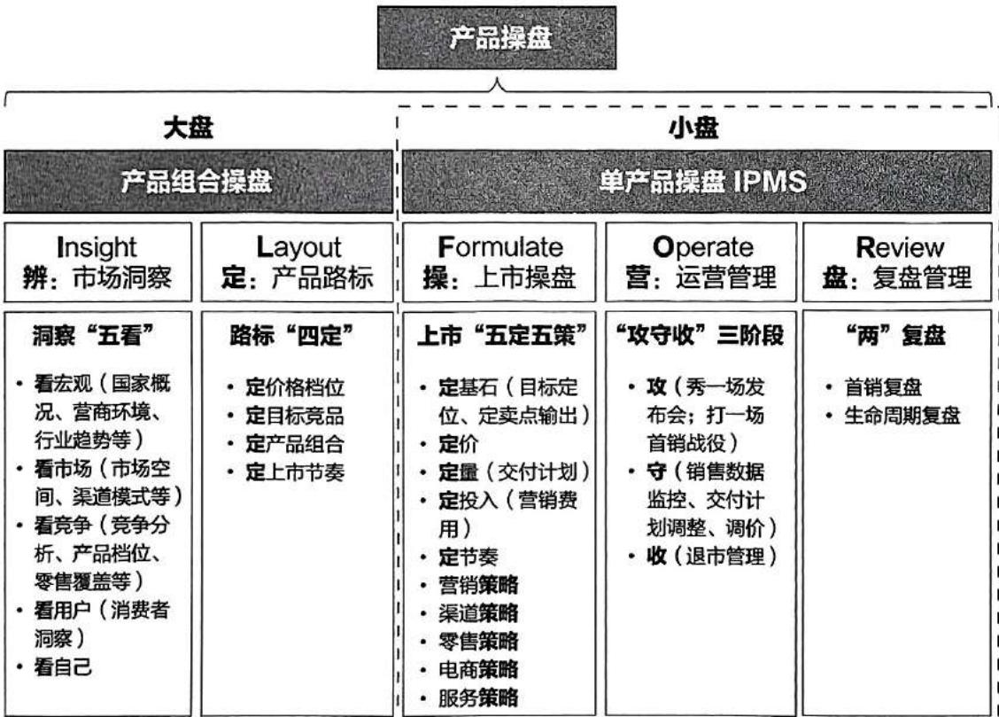
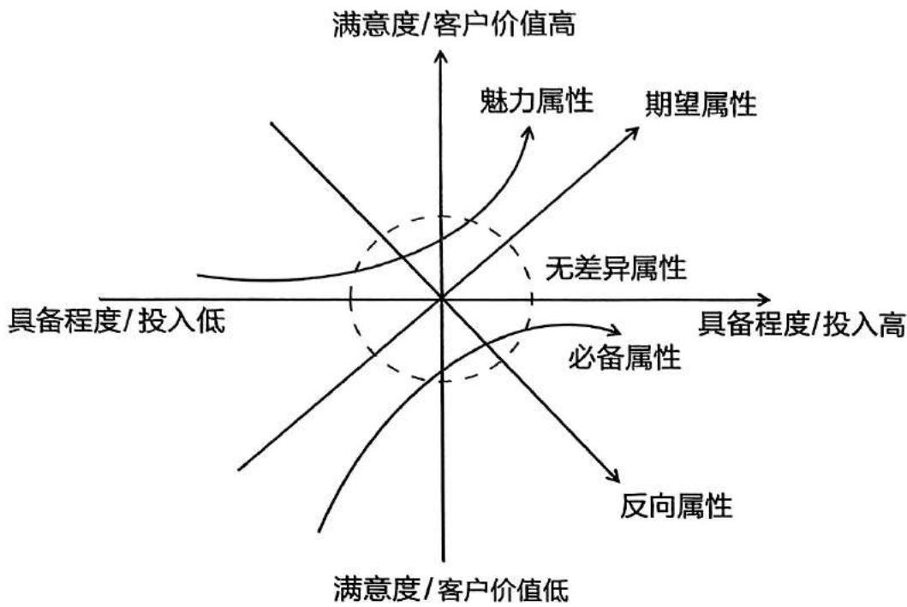
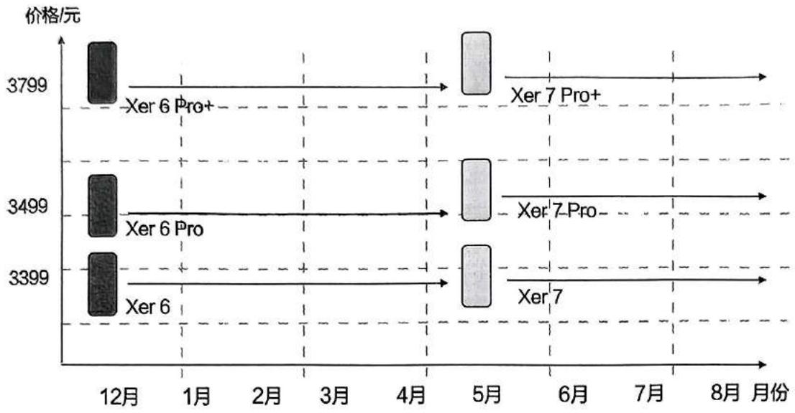
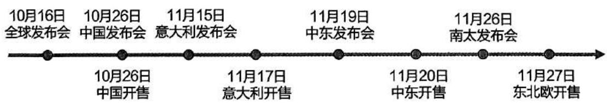
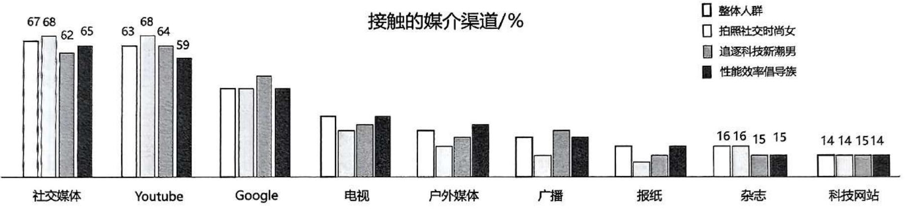
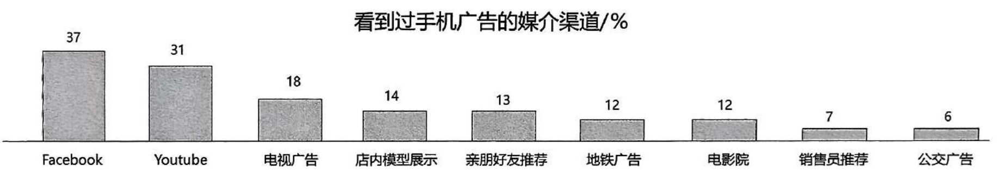
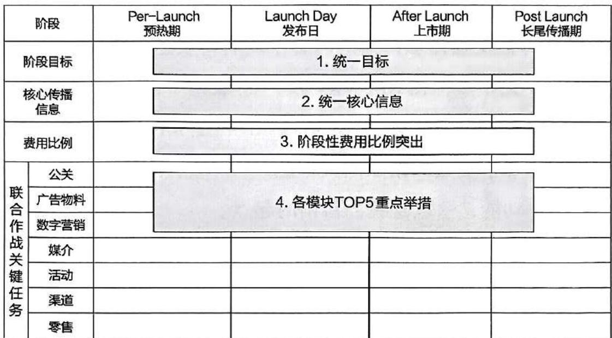
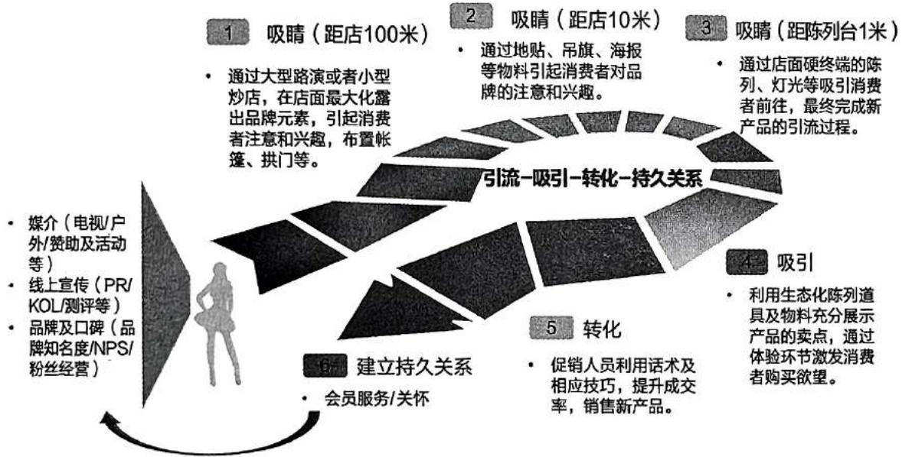
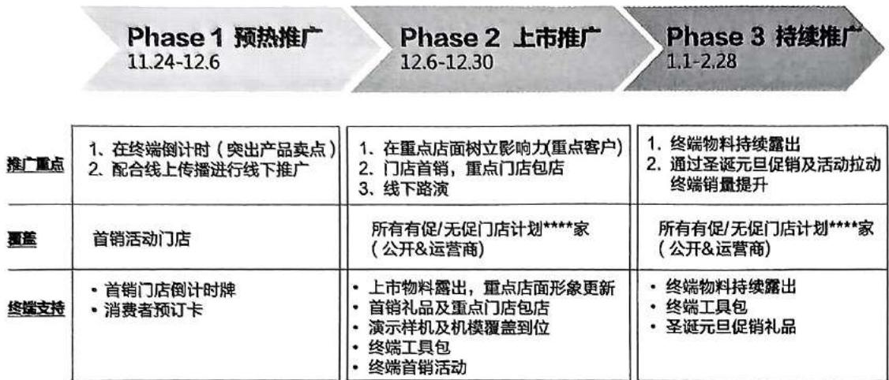
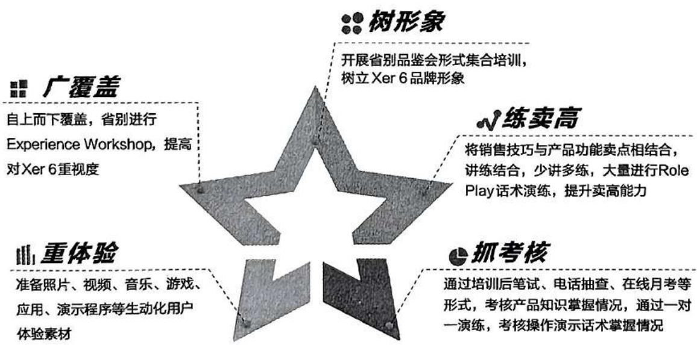

第4章 产品操盘之战术盘
4.1 产品操盘：单产品 IPMS 操盘
国家产品路标制定后，接下来就是要将每一款单产品的操盘运作好，确保每一款产品能够迅速达成市场目标，成为爆款，实现销售增长（图4-1）。累积小胜，这样才能赢得大盘的胜利。产品操盘的本质就是：Right Product, Right Time, Right Launch。
将最好的产品，在最适合的时间
以最优的价格，通过最有效的渠道
销售给最多的消费者，达到最佳的零售曲线
在本章节将以一款产品操盘的案例来展示单产品操盘IPMS流程的运作过程 。

图4-1 单产品IPMS操盘在产品操盘中的位置
案例背景材料
2016年，X公司不满足于中端市场及中端产品的业绩表现，决定向高端市场发起冲击，通过一款旗舰机型Xer 6手机来“攻入”高端市场，同时借助营销手段提升品牌形象。
-
国家市场类型：金字塔形市场；运营商与公开市场比例约为 3:7。
-
产品档位: 3000 元以上高端市场需待突破, 以带动全系列产品的销量提升。
-
发布会及首销：发布会于 12 月 6 日举行，首销日为 12 月 12 日。
-
销售渠道：线上（自有商城 + 第三方电商平台）、线下（公开渠道 + 运营商渠道）。
4.2 产品操盘之“操”——上市操盘
4.2.1 上市操盘之“五定”
4.2.1.1 定基石
产品的目标定位以及卖点是这款产品的基因，如果先天有瑕疵，后期再努力也会留有遗憾。
一、产品定位
实际上，市场洞察后的结论输出即为市场机会点及消费者需求点，同时也是产品定位的依据。通过市场洞察，我们已清楚地知道“我是谁”（who）、“我要去哪里”（where）、“我要怎么去”（how）。是提出独特的价值主张以强调与竞品的区别，还是寻找市场的空白机会点进行突破，还是在同档位上与竞品拼综合能力？这些选择和决策都将决定公司业务发展的市场策略。在大的市场策略框架下，应用 STP 模型，找准产品定位。
STP 模型是市场营销中的经典分析模型，全称为 Segmentation（市场细分）、Targeting（目标市场）和 Positioning（定位）。通过 STP 模型，企业可以制定有效的营销策略，把握商机。
-
市场细分：是将整个市场划分为不同的群体，通常根据地理、人口统计、行为或心理特征等因素进行划分。通过市场细分，企业可以更好地理解不同客户群体的需求和偏好，从而制定更有针对性的营销策略。市场细分的原则要遵循可衡量性、可进入性、可盈利性。
-
目标市场：在市场细分的基础上，企业需要选择最具吸引力的细分市场作为目标市场。这一步骤需要考虑市场规模、增长潜力、竞争情况等因素。通过确定目标市场，企业可以集中资源，提高市场进入的成功率。
-
市场定位：是确定产品或品牌在目标市场中的独特地位，使其与竞争对手区分开来，占据消费者心智。通过明确的市场定位，企业可以在消费者心中树立特定的形象，从而增强品牌的市场竞争力。定位的策略有填补定位、并列定位、对抗定位及重新定位。
(1) 填补定位策略: 是指企业将产品定位在目标市场的空白部分或未被竞争对手占领的区域, 以避开直接竞争, 迅速在市场上站稳脚跟。例如, 企业可以通过分析市场空缺, 开发具有独特卖点的产品来填补这一空白。
(2) 并列定位策略: 是指企业将产品定位在现有竞争者附近, 服务于相近的顾客群体。这种策略适合实力有限的企业, 通过与竞争对手和平共处, 争取市场份额。
(3) 对抗定位策略: 是指企业选择与现有竞争者争夺同一细分市场的位置, 通常用于实力较强的企业。这种策略要求企业能够提供比竞争对手更具竞争力的产品或服务。例如, 可口可乐与百事可乐、瑞幸咖啡与星巴克就是对抗定位的代表。
(4) 重新定位策略: 是在市场环境变化或原有定位不再有效时, 通过调整产品特性、品牌形象等方式, 使目标客户对产品产生新的认识。例如, 企业可以通过改变包装、广告策略等方式重新定位产品。
二、定卖点
1. 卖点提炼（FABE 模型）
FABE 模型是一种用于销售和营销的分析框架，由美国俄克拉荷马大学企业管理学博士郭昆漠提出。该模型的主要作用是通过四个关键环节——特征（Features）、优势（Advantages）、利益（Benefits）和证据（Evidence）来帮助销售人员更有效地向客户展示产品价值，从而提高成交率。
FABE 模型不仅适用于销售领域，还可以用于提案书、商品设计中，用于培训过程中，甚至可以作为与客户进行沟通的指导方式。通过 FABE 分析框架，可以简化概念整理，构建清晰的产品故事线，并最终将故事转化为信息和数据。其核心在于通过系统地展示产品优势、满足客户需求、提高客户满意度和制定有效策略，使销售过程更有针对性和高效性。下面以一款手机产品为例示范 FABE 模型的应用。
-
特征：产品的物理属性，例如材质、外观、功能等。这款手机使用的是高清屏幕、技术参数最先进的摄像模组、大容量电池等。
-
优势：由产品特性带来的独特优点。如拍出的照片更清晰，支持高速抓拍，具有超长待机功能等。
-
利益：从使用者（用户、消费者）的视角发现带来的利益或满足的需求。如使用这款手机进行拍照可以享受高清画质、抓拍图像不模糊所带来的愉悦体验，高频使用一天也不用充电，省去了到处找充电器的烦恼。
-
证据：提供证明或支持产品优势的依据，如技术报告、认证、用户反馈或市场数据等。如不间断使用手机的待机时长测试报告；通过了某些专业机构的测试或获得了某机构的认证等。
- 卖点梳理排序（KANO 模型）
KANO 模型是对用户需求进行分类和优先排序的方法，该模型是由东京理工大学教授狩野纪昭（Noriaki Kano）发明的，旨在通过分析用户需求对用户满意度的影响，体现产品性能和用户满意之间的非线性关系。该模型将产品属性分为五种类型：必备属性（M）、期望属性（O）、魅力属性（A）、无差异属性（I）和反向属性（R）。
-
必备属性（Must-be Quality，M）：这类需求是用户认为产品“必须有”的属性或功能。如果这些需求没有得到满足，用户会感到非常不满意，甚至可能选择不使用该产品。
-
期望属性（One-dimensional Quality，O）：这类需求是用户希望产品具备的特性，但并不是“必须”的。如果这些需求得到满足，用户会感到满意；反之，则会感到不满意。
-
魅力属性（Attractive Quality，A）：这类需求是超出用户预期的特性，提供这类需求可以显著提升用户的满意度，即使这些需求未被满足，用户的满意度也不会因此下降。
-
无差异属性（Indifferent Quality, I）：这类需求对用户的满意度没有明显影响，无论是否满足这些需求，用户都不会有太大的反应。
-
反向属性（Reverse Quality，R）：这类需求与用户的满意度呈反向关系，即提供这类需求反而会使用户的满意度降低。
利用 KANO 模型，企业可以更好地理解用户需求，并根据这些需求的优先级进行产品功能的开发和优化，进行产品卖点的梳理和排序，从而精准锁定消费者的买点，提高用户满意度和产品的市场竞争力。KANO 模型图如图 4-2 所示。

图4-2 KANO模型
KANO 模型的两大原则
-
优先原则 (M>O>A>I): 选择属性的顺序是, 必备属性优先于期望属性; 期望属性优先于魅力属性; 魅力属性优先于无差异属性。
-
组合原则（M+O+A）：一个有竞争力的产品应该由三部分组成——必须包含或满足所有的必备属性且“零”缺陷，再加上比市场领先的竞争对手表现更好的期望属性，以及具有差异化的魅力属性。
KANO 模型易用口诀
必备属性 “哦” + 期望属性 “哇哦” + 魅力属性 “哇塞” (Oh-Wow-Awesome)
KANO 模型应用举例
手机：无线上网功能、操作系统稳定性等是必备属性；屏幕色彩逼真、摄像头高清等是期望属性；超级快充、隔空传送手势功能等属于魅力属性。
餐饮：美味的食物是必备属性，快速的服务是期望属性，饮料畅饮是魅力属性。
永艺，是中国椅业第一股，其旗舰产品永艺撑腰椅连续三年全球销量第一，就是良好应用了KANO模型：
-
必备属性 “哦”（Oh）：满足座椅基本功能需求，工艺和 CMF 零缺陷；
-
期望属性 “哇哦”（Wow）：腰部支撑（撑腰准、撑腰全、撑腰稳）；
-
魅力属性 “哇塞”（Awesome）：魔术臂（可灵活调整，无论坐姿如何均可提供支撑）、首创三折叠魔毯搁脚（满足用户躺、盘、蹲、蹬、撑等多种需求）。
在这里需要注意的是，用户存在差异性，同一功能在不同的用户看来可能属于不同的属性。例如，无线上网功能对于拥有无限流量或者长期在外工作者来说可能是期望属性，而对于室内工作且希望无线上网的用户来说则是必备属性。因此，还需要明确细分市场下的目标人群，再尝试用 KANO 模型来分析需求和排列卖点。另外，由于用户需求具有发展性，同一功能也可能存在不同属性的切换。例如，快充一开始可能属于魅力属性，但随着时间推移，可能会变为期望属性，甚至是必备属性。
卖点经过提炼及排序后，我们已经明确了面向消费者和面向推广传媒的核心卖点和传播点。接下来，最重要的工作就是做好卖点的包装。就如同人穿衣一样，“人靠衣装，佛靠金装”，通过重视外在形象，我们可以更好地与世界交流，提升自我价值。卖点包装也是如此，需要通过恰当的语言和表达方式，将产品的独特性以及给消费者带来的价值，以消费者最能接受的方式传递给他们，从而引起消费者的兴趣，实现最终的销售转化。
卖点包装可以参考《让创意更有黏性》一书中的“黏性创意产生”的SUCCESs原则，即Simple（简单）、Unexpected（意外）、Concrete（具体）、Credible（可信）、Emotional（情感）、Stories（故事）。所谓“黏性”，就是让创意能够被人理解和记忆，并产生持久的影响，即达到令人过目不忘的效果。这不正是我们向消费者宣传卖点所希望达到的效果吗？那就是让卖点信息简单明了、朗朗上口，不走寻常路并同时引发消费者兴趣，真实可信，让人关心在意，然后马上行动起来。
• Simple（简单）：卖点信息要反复提炼、精简，因为面向的是消费者，所以越简单、直白、易懂越好。例如，“好空调，格力造”，简洁有力地突出了格力空调的高品质和专业性，使消费者对格力空调的质量产生信任和认可；又如华为P30搭载超感光徕卡四摄，“瞬间拉近美好”，清晰地传达了变焦功能。
- Unexpected（意外）：不走寻常路，让消费者感受到突
破惯性的强烈反差，激发他们的好奇心。例如，“瓜子二手车，不让中间商赚差价”，这与惯性思维不同，引发了消费者的兴趣；又如华为 P30 “身处黑暗也能光彩四射”，同样打破了常规认知。
-
Concrete（具体）：将抽象的事物具体化为可量化的、实在的描述，如数据、实际案例等，让消费者可以想象和感受。例如，“戴森吸尘器强大吸力，可以吸附 $99.97\%$ 小至0.3微米的微尘”，将强大吸力具象化，使消费者能够直观理解。
-
Credible（可信）：通过专业认证、用户口碑、明星代言等方式背书，让消费者感到真实可信任。例如，“国酒茅台，1915年巴拿马万国博览会金奖”，这一认证增强了茅台的可信度。
-
Emotional（情感）：与消费者产生情感共鸣，有代入感、体验感，更易捕获消费者的心。例如，“钻石恒久远，一颗永流传”，这句广告语不仅传达了钻石的珍贵和永恒，还蕴含了对爱情的承诺和坚守以及美好的祝福，触动了消费者的情感。
• Stories（故事）：通过故事具体地描绘一个场景，让消费者在故事中自然而然地接纳产品并迫不及待地付诸行动。故事能够增强产品的吸引力和感染力。
总结起来就是：让卖点听得懂、让消费者感兴趣、记得牢、可相信、很在意、马上买。
以一款手机的拍照功能为例, 应用 SUCCESs 原则进行卖点包装:
-
简单：专业影像，一拍即得。
-
意外：夜拍效果令人惊艳，竟可拍到月球环形山。
-
具体：使用全新传感器及新型算法，影像清晰超乎想象，放大 XX 倍后人物发丝的每一根都清晰可见。
-
可信: XX 品牌专业光学摄像头, 经过 XX 权威认证。
-
情感：记录您与孩子一起探索星空的亲子美妙瞬间，留下珍贵回忆。
-
故事: XX 著名摄影师带着我们这款产品拍摄了故宫的影像, 将故宫的雄伟壮丽、古香古色之美展现得淋漓尽致, 他的摄影作品还荣获了 XX 奖。
三、例: Xer 6 旗舰机的定基石
1. 产品定位
为喜爱科技商务的人群打造的时尚智能手机; Xer 6 手机——极限科技时尚旗舰机。
2. 主打卖点
极致优雅的外观 ID、高性能拍照、最新科技（如：不锈钢超薄外壳、窄边框超大屏幕、双摄、快充、高性能闪存、亮丽全高清显示屏等）。
3. 消费者画像
通过运用消费者地图模型（包括消费者生活态度、购机需求及使用行为等），对高端消费者进行分群，并结合定性研究，提炼出三类典型用户人群：
(1) 性能效率倡导族
-
31~45 岁男性为主，职场资深人士，有稳定的工作和收入，对生活中的事物有比较成熟的审美观；
-
工作繁忙，有家庭责任感，社交活动有限；
-
追求高品质生活，有一定的经济能力，对手机外观、配置及性能有较高要求，希望使用体验流畅，能够帮助提升工作效率。
(2) 追逐科技新潮男
-
20~30 岁男性为主，学生或职场新人，受过良好教育；
-
追逐潮流，喜欢个性时尚，乐于尝鲜，喜欢社交，热爱运动，生活随性；
-
爱使用互联网，接受新事物能力强，对手机新技术新功能较为敏感，追求科技感。
(3) 拍照社交时尚女
-
20~30 岁女性为主，学生或职场新人，受过良好教育；
-
积极进取，喜欢拍照，注重社交；
-
关注手机拍照功能，闲暇时与固定圈子内的朋友聊天、互动，购物前后喜欢讨论分享。
4. 产品组合
产品的配置、策略与渠道布局详见表 4-1。
表 4-1 产品的配置、策略与渠道布局表
| 产品组合 | 配置 | 策略 | 渠道布局 |
|---|---|---|---|
| Xer 6 | 6G+128G | 第一主推 | 全渠道 |
| Xer 6 Pro | 6G+128G | 线下渠道 | 线下渠道 |
| Xer 6 Pro+ | 8G+128G | 树品牌 | 全渠道 |
5. 销售目标
保底 65 万台，冲刺 90 万台。
4.2.1.2 定价
我们知道，产品本身是具有价值的（即凝结在商品中的抽象人类劳动），我们制定的价格就是这种价值的货币表现。举例来说，如果产品价值是100元，那么价格应在100元左右浮动。这是理论上的价值与价格的关系，但在消费品定价过程中不能如此简单应用。手机的定价是一个复杂的过程，涉及多个因素，包括成本、市场需求、品牌价值、消费者感知价值以及竞争环境等。以消费者感知价值为例，在与消费者访谈沟通后，消费者会形成对产品的价值感知。如果产品的价格高于他们的这种感知价值，他们会认为不值，因此不太容易购买。但相反，如果他们感知的价值高于产品价格，那么他们会觉得太值了，太有性价比了，会觉得物有所值或物超所值，从而极易触发购买行为。因此，产品的定价是基于成本、竞争、品牌价值、目标市场等因素之间的妥协与平衡的结果。
产品定价需要了解的几个定义
-
BOM 成本：产品所有物料的直接采购成本，即 “物料清单成本”。例如原材料，外购零部件，包装材料等。
-
产品成本：生产环节的直接总成本，即“制造成本”或“生产成本”，含 BOM 成本、直接人工（生产线工人工资）、制造费用（设备折旧、能源消耗）等。
-
财务成本：财务视角下的总成本，含生产及企业运营的总成本，含产品成本、研发分摊、管理费、财务费用、仓储物流费用等。
-
销售成本：产品最终触达消费者的总成本，即“完全成本”或“到岸成本”，含财务成本、销售费用（广告、渠道佣金）、运输、关税、售后成本等。
-
客户开票价：又称为 Invoice price（开票价格），是销售经理基于销售成本，扣除增值税和渠道前向返点后的结算价格。
产品定价的三种方法
-
成本定价：基于自身对利润的诉求，从成本出发，结合渠道空间，确定零售价。适用于品牌基础弱、营销预算少且市场竞争激烈的阶段。这里说的成本，指综合考虑产品生产、制造、运输、存储和销售费用等的总成本。
-
竞争定价：根据市场竞争对手的定价，确定零售价。适用于产品竞争对抗阶段，在相持情况下，某一品牌针对竞争对手通过高配同价或同配低价的方式，打破僵局，改变竞争态势，获得市场竞争优势。
-
价值定价：基于为客户所创造的价值或客户能感知的价值进行定价。适用于品牌积累了一定势能、市场份额后，向高端市场冲击的阶段。
定价策略（不同阶段的定价）
- 市场切入期：高配低价。通过高性价比、高举高打的策略，迅速打开市场局面，抢夺市场份额。
月增长期：高配同价。在具有一定山
通过合理的定价站稳市场，保持市场份额。
- 试成熟期：高配高价。经过长期的产品、营销、 品牌已获得消费者认可，通过高配高价，为消费者提供 产品，企业也获得更高利润。
需要注意的事项
要充分考虑流通链路中各层级的利润空间：产品在厂代理一分销商—零售商—门店—消费者的链路中，每一价格空间都要进行合理设置，不仅是买入价和卖出价的。还要考虑各种费用的预留，例如产品出口海外的场景、销售返点、后续产品调价空间等。从BOM成本价格已直到街价（RRP）要计算清楚。扣除增值税（VAT ）和税后，全球的街价尽量拉通。不同的渠道模式有不同的利润，零售商利润要高于渠道分销利润。
要全盘考虑产品全生命周期损益：对产品量价进行预 销费用、渠道激励费用、零售提成等各项费用投入都要 违法，反复验证街价的合理性，追求市场价值和利益的
定价重要性
产品价格是产品在市场中的占位以及在消费者心中的 地位。如果不匹配，就不会被市场以及消费者所接受 产品的定价要考虑成本、竞争、消费者、公司的战
-
市场增长期：高配同价。在具有一定品牌声量和消费者基础后，通过合理的定价站稳市场，保持市场份额。
-
市场成熟期：高配高价。经过长期的产品、营销、口碑积累，品牌已获得消费者认可，通过高配高价，为消费者提供更有价值的产品，企业也获得更高利润。
定价需要注意的事项
-
要充分考虑流通链路中各层级的利润空间：产品在厂家—总代理—分销商—零售商—门店—消费者的链路中，每一层级的价格空间都要进行合理设置，不仅是买入价和卖出价的价差，还要考虑各种费用的预留，例如产品出口海外的场景、经销商的销售返点、后续产品调价空间等。从 BOM 成本价格出发一直到街价（RRP）要计算清楚。扣除增值税（VAT ）和消费税后，全球的街价尽量拉通。不同的渠道模式有不同的利润空间，零售商利润要高于渠道分销利润。
-
要全盘考虑产品全生命周期损益：对产品量价进行预估，营销费用、渠道激励费用、零售提成等各项费用投入都要考虑进去，反复验证街价的合理性，追求市场价值和利益的最大化。
定价重要性
产品价格是产品在市场中的占位以及在消费者心中的心理占位。如果不匹配，就不会被市场以及消费者所接受。因此，产品的定价要考虑成本、竞争、消费者、公司的战略目的等因素。如果定价失误，对该产品来说就是一场灾难。华为初入公开市场时，由于经验不足，P1的上市操盘就吃了亏。
在产品定价上，P1 的零售价为 2999 元。由于华为不清楚国内市场的手机销售规则，给渠道商预留的利润空间不够，无法获得渠道支持，价格很快降到了 2000 元以下。另外，Ascend D1 发布时，P1 还在销售期。传统渠道商认为，上架 D1 会影响 P1 的销售，于是拒绝 D1 进入渠道。那时候，每一款手机销量都低于预期，大量的资金成为沉睡在仓库的元器件和成品。
上面这个简短的小案例包含了太多内容，充分说明了定价、控价、调价、渠道管控、新老产品平稳交替的重要性。因此，产品操盘是一个系统性的工程，牵一发而动全身。
例: Xer 6 旗舰机的定价
作为高端市场切入期的第一款产品，采用高配低价策略，暂不考虑利润，利用成本定价法制定有竞争力的建议零售价，更多让利于消费者，“Wow launch”（打造让消费者惊喜的上市，眼前一亮，发出“Wow”的赞叹）。
考虑到成本、竞品配置及零售价、下一代 Xer 7 上市价格与 Xer 6 调价后形成的上下档位的配合等因素，因此制定 Xer 6、Xer 6 Pro 和 Xer 6 Pro+ 的 RRP 分别为 3399 元、3499 元、3799 元（图 4-3）。简易理解：定价要瞻前顾后，顾左顾右。

图4-3 产品定价示意图
4.2.1.3 定量
定量是要确定产品在销售各个阶段的交付策略。上一代产品的销售表现可以作为本次产品定量的参考依据，同时也要考虑市场增长性以及竞争对手的相关产品布局。如果是新切入的产品档位，可参考其他档位产品的表现，同时考虑市场容量及竞争对手的情况。
- 上市销售爬坡期
可以根据首销产品数量需求、上市前 45 天客户的订单量以及客户 13 周滚动计划来确定数量。
- 稳定销售期
可以根据零售 Sell out 监控数据、客户 13 周滚动销售预测计划及 6 个月的滚动要货计划来制订和安排交付计划。因此，公司必须对产品的进销存（PSI）进行有效管理，同时也要参考营销计划及渠道的拓展计划等数据。
- 退市期
需要提前 3 个月锁定订单，同时依据 13 周滚动计划来制订交付计划。此时要关注产品的销售表现，谨慎应对，以免造成库存压力。尾货清盘如果处理不当，造成乱价、甩货，会对下一代新品上市产生不良影响，同时也会损害品牌的口碑。业界常规对尾货处理的方法是找到兜底的客户或渠道进行买断，在一定范围内进行消化。
一般来说，在中国市场，市场波动是有一定规律的。对这些规律的掌握，可以有效地进行销售预测和交付预测，再加上营销策略的加持，实现供销相对平衡。把握市场波动要考虑区域性（如区域的节日、大型活动等，如旅游节、泼水节等）和文化性等特点。中国市场大的波动节点包括：电商的双11购物节、年货节、京东购物节等；还有返校季、春节前、劳动节、国庆节、元旦等，都是销售较旺的季节，有“金九银十”的说法，形容的是销售旺季。当然，也有市场低谷期，一般是在三个节日（指特定节日，春节、五一及国庆节）的前夕或正月等时段，因为存在消费前置或后置的情况。
因此，定量和交付要经过系统的考量，根据现实的数据和多方面信息的整合，得出初步结论后再反复、持续地进行修正，不断迭代，以提升预测的准确率。
例: Xer 6 旗舰机的定量
(单位：万台)
| 销售预测 | 12月 | 1月 | 2月 | 3月 | 4月 | 合计 |
|---|---|---|---|---|---|---|
| Xer 6 | 3 | 10 | 7 | 5 | 5 | 30 |
| Xer 6 Pro | 5 | 8 | 7 | 5 | 5 | 30 |
| Xer 6 Pro+ | 0.5 | 1.5 | 1.5 | 1 | 0.5 | 5 |
| 合计 | 8.5 | 19.5 | 15.5 | 11 | 10.5 | 65 |
4.2.1.4 定投入
定投入就是定资源，不同的项目级别匹配的资源也是不同的，采取分层分级的资源管理原则。
一款产品上市, 会确认项目级别, 一般分为: S 级、A 级、B 级、C 级, 级别依次降低。华为的 Mate 系列、Pura 系列都是 S 级别的项目。资源包一般包含营销费用、渠道政策、零售政策、交付资源、样机资源、人力资源、合作资源等。在操盘项目开始时, 先大致确定一个资源费用率, 例如 $3 \%$ 、 $5 \%$ 或 $X \%$ , 随着项目的推进, 逐渐明确并落实到具体的一个个类目中。表 4-2 为分级别的项目资源配置表 (示意表)。
| 资源类目 | 各级别资源配置包 | ||||
|---|---|---|---|---|---|
| 类别 | 内容 | S级资源 | A级资源 | B级资源 | C级资源 |
| 品牌IP | 品牌合作资源等 | ★ | ★ | — | — |
| 产品资源 | 联名周边定制等 | ★★★ | ★★★ | —— | —— |
| 营销资源 | 发布会开屏广告KOL¹等 | ★★★ | ——★★ | —— | —— |
| 销售资源 | 双11线下地堆等 | ★★ | ★★ | ★★ | —— |
| ...... | ...... | ★ | ★ | — | — |
4.2.1.5 定节奏
企业产品的上市节奏是多方因素综合考量后的产物，制定上市节奏与多种因素有关：
-
产品研发周期：从产品的概念设计、技术研发、样品制作到最终的量产，每个环节都需要时间，这直接影响了产品的上市节奏。
-
生产能力与供应链稳定性：企业的生产设备、生产工艺、工人熟练程度等决定了产品的生产效率和质量；稳定高效的供应链能确保原材料及时供应、零部件质量可靠。
-
市场需求波动：消费者对家电的需求会随着季节、节假日、经济形势等因素变化，例如市场的淡旺季，夏季是空调旺季，电视在十一、春节前会热销，手机、电脑等在开学季前会有一波销售高峰……
-
市场竞争态势：竞争对手推出新品的节奏会影响本企业产品的上市节奏。
-
技术创新、政策法规变化、经济形势、产品生命周期的不同阶段、竞争策略等方面都会对企业的新品上市节奏产生影响。
总部层面单产品上市节奏
在综合考虑所有相关因素后，单产品操盘总部层面会有上市节奏安排，如全球发布会、各国发布会及各国家开售日期安排。如图 4-4 所示为某产品的上市节奏示意图。

图4-4 总部层面单产品上市节奏示意图
图 4-5 国家层面单产品操盘节奏示意图
4.2.2 上市操盘之“五策略”
4.2.2.1 营销策略
1. 通过洞察确定细分市场及目标人群
基于前期的市场洞察，Xer 6 系列的价值主张、核心卖点、细分市场及目标消费群体画像已明确并达成共识。在此基础上，我们制定了营销策略。三类典型用户人群将作为目标人群：性能效率倡导族、追逐科技新潮男、拍照社交时尚女。为了更有效地触达这三类人群，在有限的资源投入下实现收益最大化，我们需要对这三类人群的行为模式、触媒习惯进行分析，从而有针对性地制定营销策略。例如，图 4-6 所示为三类人群的媒介渠道调查结果。
通过调研可知在媒介投放上需要聚焦的渠道以及费用分配的比例安排。
2. 以洞察为基础，确定合适的营销策略与打法
营销策略三板斧：代言人、发布会、脉冲式营销。Xer 6系列手机的定位是科技时尚旗舰机，拍照性能优越。因此，我们筛选出与产品定位最匹配、在本地有影响力的代言人，再使用符合本地表达习惯的方式，通过本地人感兴趣的媒介渠道进行传播，预热并加温市场；而后通过发布会和首销引爆市场，再通过一系列的脉冲式营销保持市场热度和声量，为热销营造良好的氛围。
特别需要注意的一点是，一定要营销聚力，让主体信息被无限放大。什么是主体信息？假如有10个卖点，在营销传播中不能胡子眉毛一把抓，全兼顾则无重点。我们需要做减法、让主体信息充分凸显。例如，这个国家的人喜欢拍照，细分的三类人群也关注拍照功能，同时拍照是手机的最重要功能之一。因此，拍照这个卖点作为主体信息可以不断传承，在下一代产品上市后也能唤醒消费者的记忆，实现品牌资产的积累。因此，拍照就是我们的主体信息。举例来说：在PR 和SOCIAL（社交媒体）传播的内容中，需要表达10个卖点（拍照是其中之一）；在KSP KV及产品视频中，则重点表达4个卖点（拍照是其中之一）；在TVC 、主KV及产品KV中，突出表达2个卖点（拍照是其中之一）；最后落地的核心卖点仍是拍照功能，这也是我们营销的起点。
图 4-6 目标人群媒介渠道分析


3. 制定产品的 Campaign 执行
Campaign 的中文解释是 “战役”，指的是为实现一定的战略目的，按照统一的作战计划，在一定的方向上和一定的时间内进行的一系列 “战斗” 的总和。在营销领域中，Campaign 指的是一系列广告活动和营销活动，通常是为了宣传产品或服务而设计的，这些活动包括电视广告、互联网广告、社交媒体推广等。新产品上市推广需要打响知名度，那么营销造势必不可少。
(1) 制定营销 Campaign 的原则
-
要有统一目标；
-
要有统一核心信息；
-
阶段性费用比例要突出；
-
要有TOP5的重点举措。
图4-7为产品营销Campaign作战地图。

图4-7 产品营销Campaign作战地图
(2) 制定营销 Campaign 地图时需要关注的事项
-
围绕销售曲线的规划，确定产品营销的投入；
-
围绕消费历程的转化，不同阶段采取不同的手段。
表 4-3 为消费历程中的不同阶段采用的不同营销手段。
表 4-3 消费历程的不同阶段采用不同营销手段
| 消费历程 | 营销手段 | |
|---|---|---|
| 知道 | ||
| 知道 | 手段 | 占比/ROI¹ |
| 知道 | TV | — |
| 知道 | Radio | — |
| 知道 | OOH | — |
| 知道 | 发布会 | — |
| 知道 | 报纸 | — |
| 知道 | Social | — |
| 知道 | 合计 | — |
| 了解 | ||
| 了解 | 手段 | 贡献度 |
| 了解 | 官网 | — |
| 了解 | 产品软文 | — |
| 了解 | KOL | — |
| 了解 | Social | — |
| 了解 | SEM | — |
| 了解 | 媒体沟通会 | — |
| 了解 | 报纸/杂志 | — |
| 了解 | 合计 | — |
| 比较 | ||
| 比较 | 手段 | 贡献度 |
| 比较 | 评测 | — |
| 比较 | Social | — |
| 比较 | KOL | — |
| 比较 | SEM | — |
| 比较 | 合计 | — |
| 购买 | ||
| 购买 | 手段 | 贡献度 |
| 购买 | 促销员讲解 | - |
| 购买 | 零售促销 | - |
| 购买 | POSM | - |
| 购买 | 路演 | - |
| 购买 | 合计 | - |
| 复购/推荐 | ||
| 复购/推荐 | 手段 | 贡献度 |
| 复购/推荐 | CRM | - |
| 复购/推荐 | 售后服务 | - |
| 复购/推荐 | 技术支持 | - |
| 复购/推荐 | 新机推荐 | - |
| 复购/推荐 | 合计 | - |
例如，在“知道阶段”，通过 TV（电视）、Radio（广播）、OOH 、发布会等营销手段让消费者知道这个产品的到来；在“了解阶段”，通过产品软文、KOL、SEM 、媒体沟通会等方式让消费者了解产品；在“比较阶段”，通过评测、KOL 等方式让消费者通过比较，深刻认识到产品的卖点和优势；在“购买阶段”，通过促销员讲解、促销活动、POSM 及路演等手段、促进购买；在“复购/推荐”阶段，则通过 $\mathrm{CRM}$ 、售后服务等方式与消费者建立深度链接，提升消费者的满意度和忠诚度。
- 营销活动需要与渠道和零售作战紧密配合
营销活动实现的是让消费者由知道到想购买本产品，而渠道和零售实现的是让消费者从有兴趣想购买到实际购买本产品，因此二者一定要紧密配合。这也是IPMS操盘流程要解决的产品销售痛点之一。当消费者想买产品时却发现没有产品供应或找不到销售网点，这就造成了营销资源的浪费以及销售的损失。此时的渠道和零售门店覆盖、包店炒店、促销员培训、员工激励与动员等工作也要落实到位。
-
对营销活动的执行进行事中监控，及时调整策略
-
总结复盘，积累经验
例: Xer 6 旗舰机的营销策略
推广节奏：预热期把概念做足；发布期把产品讲透；热销期深化价值主张。
| 广 | 准 | 深 | 热 | 爱 |
|---|---|---|---|---|
| 上市伊始广而告之 | 发布初期用户群、地域、产品精准传播 | 销售初期深挖产品性能,打动目标用户 | 销售中期渲染热销氛围 | 销售中后期构建忠诚度/推荐度 |
| 自主声量产品、品牌对用户多维度预热;谍照等方式引发消费者兴趣 | 产品体验专访、媒体品鉴、专题策划、品鉴会、全场景打造 | 充分对比深度评测、图片、视频、排行榜、竞品评测;持续强调Xer 6手机的强大功能和价值,提升竞争力 | 各种热潮热销稿件、销量稿件、深度玩机攻略、用机体验、节日导购口碑 | 各种热潮热销稿件、销量稿件、深度玩机攻略、用机体验、节日导购口碑 |
| 情感连接媒体深度合作、配合媒介、线上线下活动的互动策划,持续拉升销量 | 情感连接媒体深度合作、配合媒介、线上线下活动的互动策划,持续拉升销量 |
图 4-8 推广节奏及主要活动内容
第4章 产品操盘之战术盘
TVC 推广：从 12 月 6 日起，在电视台及 XX 综艺节目等投放，广告语为 “超能尊享，视界掌控——来自 Xer 6 旗舰机”。
广告媒介计划：推广产品为 Xer 6 系列。投放周期为 11 月和 12 月。媒介策略为“基于目标受众媒介接触轨迹分析，利用渗透率、偏好度较高的网络媒体进行全国覆盖，加强大范围曝光；线下传统媒体对重点区域市场进行补足，拉动地方市场销量”。
软性内容投放计划：推广产品为 Xer 6 系列。投放周期为 11 月和 12 月。投放目标为“集中占领主流媒体焦点图、头条文字链等广告位置，同时在社交媒体最大限度曝光产品，并加入导流链接，促进销售”。媒介策略为“基于受众习惯，进行全渠道覆盖，同时结合热点时间及重要时间节点，对产品进行最大限度曝光，树立良好产品口碑，拉动销量”。（焦点图广告通常出现在网页的中央位置，往往伴随着滚动效果，有时也被称为“轮播图”，用来吸引用户点击并访问广告主的网站；文字链广告是一种以文字形式展示的广告，通常放置在页面的侧边栏或内容的下方。文字链广告简单直观，用户点击文字链接后可以直接跳转到广告主的页面。）
发布会: 12月6日下午2:00开始, 覆盖XXX家媒体, 百度指数目标突破XXX万; 覆盖省分销平台及全国TOP XXX家核心经销商客户。通过发布会, 将产品优势及品牌理念传递给客户和消费者; 赠送价值礼品给参会客户, 拉近客情关系; 通过客户朋友圈宣传, 扩大产品发布范围; 发布会结合后续订货
(首销政策)，促成火爆销售。
首销预热活动：时间为12月6日—12月11日，主题为“关注Xer 6首销，与代言人面对面”“关注Xer 6首销，获得产品1年体验权”“关注Xer 6首销，粉丝会直通车”。形式为“线下结合包店、炒店活动，开展关注首销活动，参与者获奖并发布社交平台话题。活动现场录制相关视频，通过直播等方式强调Xer 6首销信息，用于线上传播。通过访谈或其他形式活动，宣传最新芯片首发、Xer 6尊享会员的权益等”。
“粉丝会”启动活动：时间为12月22日，主题为“粉丝会带你领略非凡人生，成就不一样的你”。形式为“邀请代言人、公司领导一起以酒会的形式，宣布启动‘粉丝会’，参加人员包括自首发10日内部分有代表性的购买Xer 6用户，进行直播和线上炒作”。
4.2.2.2 渠道策略
在消费品行业中，渠道是产品或服务从生产者传递到最终消费者手中的路径。因此，渠道是过程、是通道、是路径，渠道管理则是对产品流通过程和路径的管理。通过渠道的定义，就很好理解新产品上市渠道策略需要解决的主要问题了：
-
此款新品的销售预测与目标确定；
-
产品版本 / 地区 / 渠道 / 客户 / 门店的覆盖计划；
-
销售政策的制定。
所有的策略都基本遵循着一个框架模型：洞察—计划—执行一检查监控一复盘处理（PDCA ）。上一次的策略复盘正是这一次策略制定时的信息输入，将成功经验进行保留积累，于是能力便能不断提升。这种能力的提升是建立在流程和组织之上的，而非依赖个人的能力。
在制定渠道策略前，首先要进行洞察信息的输入。除了之前所提到的洞察信息，渠道还要关注上一代产品在渠道中的销售表现，再结合此次产品的定位来选择本次的渠道和客户，并指导客户销售政策的制定。渠道策略要涉及是否布局线上或线下及其比例，公开渠道、运营商渠道的布局及比例，以及筛选满足一定条件的客户进行产品的覆盖。在明确了覆盖渠道和客户后，接下来的目标分解、销售政策制定、资源匹配等工作就可以深入开展。
例: Xer 6 旗舰机的渠道策略
目标分配方案
(单位：万台)
| 销售预测 | 12月 | 1月 | 2月 | 3月 | 4月 | 合计 |
|---|---|---|---|---|---|---|
| 自有商城及第三方 | 2 | 8 | 6 | 4 | 5 | 25 |
| 公开市场 | 5 | 10 | 8 | 6 | 5 | 34 |
| 运营商—电信 | 1.5 | 1.5 | 1.5 | 1 | 0.5 | 6 |
| 合计 | 8.5 | 19.5 | 15.5 | 11 | 10.5 | 65 |
目标需分解到周，具体到经销商客户，具体到门店。
一营一会三聚焦
操盘训战营：锁定平台客户，开展操盘训战营，围绕大零售、大门店对 Xer 6 系列产品上柜和主推提出明确要求。核心就是要进入各级客户的 A+ 主推政策中。
KA 客户动员会：邀请核心渠道客户、大零售商召开动员会议，打造厂商一体化，树立高端局面。聚焦“三个价值”：价值客户、价值门店、价值区域。
三聚焦：聚焦 TOP200 核心经销商；聚焦 TOP8 价值省份；聚焦 TOP2000 零售阵地。
4.2.2.3 零售策略
前面讲到，通过营销活动给消费者“种了草”，实现了从不知道到想了解、想购买的转化；之后通过渠道策略将产品送到了距离消费者“一公里”的地方；现在要解决的问题就是如何让消费者购买产品。这个通过零售店面的运作让消费者实现购买产品并不断购买、推荐的过程，就是零售策略要解决的问题。
在 2.4.2.4 “IPMS 与零售的关系”一节中，介绍了零售管理的相关知识。零售是由“人、货、场”三大要素构成的，那么新产品的零售策略将围绕着“人”“货”“场”这三大要素展开，为新产品的上市热卖做好准备。
“人”主要是指零售促销人员。要让促销人员销售好产品，需要让他们了解并熟悉产品，因此培训要到位；为了激发促销人员的热情及意愿，以销售好产品，需要奖励到位；同时，产品的销售目标要分解到人、天等。
- “货”指货物，包括产品和物料、演示道具等。如产品的进销存、新产品的展示物料及陈列道具等的管理工作。
“场”指门店管理及促销活动的管理。通过门店及促销活动的管理，在消费者购物旅程中有效触达消费者，并在每个触点与消费者充分互动，引导并实现转化，完成产品的购买。
这也就是消费品行业常提起的零售管理的“人”“店”“物”“奖”“促”“培”。
零售管理最重要的指标之一是零售销售目标的达成。零售目标（数量 / 金额）的达成方法可以参照如下胜利公式：
$$ \text { 零售目标 } = \text { 门店数量 } \times \text { 单店单产 } $$
$$ \text { 单店单产 } = \text { 客流量 } \times \text { 进店率 } \times \text { 转化率 } \times \text { 客单价 } \times \text { 复购率 } $$
由上面公式可得知零售策略的主攻方向：
-
门店数量：产品能够覆盖的门店数量越多越好（但相对地，也要考虑门店的质量，这决定于零售门店拓展及管理能力）。
-
客流量：新、老顾客的线上、线下引流，营销策略在其中起到很大的作用。
-
进店率：与店面的形象、促销活动等有关联。
-
转化率：消费者的转化与销售人员的意愿、自身的能力
以及员工的经验有很大关系。因此，事前的产品知识培训以及销售技能的培训至关重要，也与员工激励有密切联系。
-
客单价：是指每一个顾客平均购买商品的金额，也就是平均交易金额。计算公式是一定周期内销售额与成交顾客数的比值。客单价越高，说明顾客购买的产品数量多或产品的单价高。门店内的客单价与销售人员的卖高能力、产品陈列、促销方案等有关。
-
复购率：老顾客维护得好，复购率高，也为门店带来正向的收益。参照不同行业的获客成本，一般来看，获得一个新客户的成本是保留现有客户的6~7倍。因此，要做好老顾客的管理。
基于上面讲到的胜利公式的几个要素，零售策略需要照顾到这些方面。
下面简单讲述从消费者购物之旅来看线下如何进行有效的从“引流到吸引再转化”的过程，如图4-10所示。
-
要让消费者在距离零售门店 100 米左右就能看到。如何做到吸睛呢？可以通过大型路演或小型炒店活动，在店面最大化露出品牌元素或产品信息，引起消费者的注意和兴趣。视情况可以布置帐篷或拱门等。
-
在距离门店 10 米左右，通过地贴、吊旗、海报、X 展架等物料吸引消费者对品牌的兴趣（注意这些物料的使用要考虑商圈的环境以及消费者接受度，不要让消费者感到反感）。
-
在距离产品展柜或展台 1 米左右的地方，通过店面硬终端的陈列、灯光等吸引消费者前往，最终完成新产品的引流
过程。
-
消费者已经站在展台旁，这时需要使用生态化陈列道具及物料充分展示产品的卖点，通过体验环节吸引并激发消费者的购买欲望。举例：为了演示手机拍照强大的抓拍功能，华为零售管理部设计了一款道具——高速旋转的光盘，然后消费者可以使用手机抓拍，在高速旋转下捕捉的画面画质优良、字体清晰，引起消费者对产品拍照功能的赞叹。
-
在消费者体验产品的同时，促销人员利用话术及相应的销售技巧，提升成交率，销售新产品。
-
与消费者通过后续的会员服务及会员关怀建立持久关系，维护老顾客。

图 4-9 消费者购物之旅：引流—吸引—转化—持久关系示意图

图4-10 终端线下零售门店推广节奏示意图
终端门店布局
- 终端气氛推广要求：新品上市首销期间，要求终端核心门店 100% 覆盖物料、机模、演示样机，其他所有门店需在半个月内完成覆盖；区域需跟踪物料制作下发及陈列过程，并及时反馈；推出相应激励政策，奖励店面形象活动总分前十名的团队，对覆盖不合格的团队进行惩罚。
店面形象要求：要求“一夜换装”——忽如一夜春风来。终端主 KV 和形象物料需在发布会后第二天（11 月 9 日）完成布置；所有核心门店、市级以上门店的主 KV 需上墙；所有氛围物料需同时露出；Xer 6 样机 + 机模的整体覆盖率要达到目标售点的 90%。
- 终端活动推广要求：实现三个统一（宣传主题统一、推广节奏统一、活动气氛统一）。首销活动后推出主推月活动，以持续提升热度。中小型路演区域需提供具体的活动时间和地点。推出终端活动推广激励政策，对各区域门店的首销路演及主推月活动进行评分，奖励前十名，并对后五名提出警告。
首销期（11月11日—30日），各区域需保证举办10场中大型炒店活动；全月主推：维持热度至12月（核心城市核心商圈每周末开展Xer6小炒主推活动）。
零售培训强化
目标：人人会卖 Xer 6
-
自上而下做覆盖：区域总 / 操盘手 / 业务经理需先接受培训，提高新品培训的重视程度。
-
讲解、演示标准统一：卖点演示等终端人员必须人人会用、会讲、会演示。

图4-11 零售培训强化方法
上市专项点检
在产品上市期间，总部将根据提前制定的点检考核表安排专项点检，采用区域检查及神秘访客的形式，对零售门店的现场、活动、人员等管理内容进行检查。点检开始前需培训到位，让零售人员了解点检的要求、点检的项目以及相应的奖惩评判标准及相关内容。
4.2.2.4 电商策略
互联网技术的发展不断推动着电商产业的进步，商品交易在互联网行业商业闭环中扮演着越来越重要的角色。前面提到，零售的胜利公式是零售销售额等于零售门店数量、单零售门店的销售、产品的平均单价等关键因子的乘积，无论是线下零售门店的销售还是线上网店的销售，都遵循这个公式。那么，对于一款新产品的上市操盘，电商都需要做哪些工作呢？
之前在渠道策略一节中提到了 PDCA 模型：洞察—计划—执行—检查监控—复盘处理。电商策略也是从洞察、从调研开始的。通过调研掌握网络传播的特点、消费者网购习惯等信息，在预热期、发布期、首销期及稳定销售期保持长尾销售曲线，并采取相应的措施，确保新产品线上销售目标的达成。电商要充分考虑线上流量的获取（公域流量和私域流量），通过打动人心的卖点、多触点的消费者触达方式（如开屏广告、朋友圈推广等）来引发消费者的兴趣，再通过具有竞争力的定价及促销方案形成高效转化，促成消费者对产品的购买。
在制定电商策略时，应该把握与线下零售策略相辅相成、相互促进的原则，切不可相互竞争形成内斗，导致两败俱伤。一般情况下，可采用不同规格的产品专供线上，或采用线上线下同价的方式。
例: Xer 6 旗舰机的电商策略
电商渠道为自有商城、第三方平台；产品为 Xer 6、Xer 6 Pro+；定价为线上线下同价，单独一款颜色专供线上。
Xer 6 产品电商首发操盘步骤
| 步骤 | 事项 | 主要内容和活动 |
|---|---|---|
| 第一步 | 产品策略 | 用户画像、产品备货、预热启动 |
| 第二步 | 支撑保障到位 | IT系统、客服、仓储、危机公关 |
| 第三步 | 全渠道流量绑定 | 首发平台选择、首发平台流量、第三方流量、营销活动等 |
| 第四步 | 营销物料准备 | 卖点提炼、产品页面、图片文案、PR及稿件等 |
| 第五步 | 确定首发策略 | 首发价格体系、首发供货时间、首发方式等 |
| 第六步 | 召开发布会 | 公布价格、公布预约渠道、公布首发时间等 |
| 第七步 | 首发 | 此时声量、流量应达最高值 |
Xer 6 电商销售目标
(单位：万台)
| 销售目标 | 12月 | 1月 | 2月 | 3月 | 4月 | 总计 |
|---|---|---|---|---|---|---|
| 自有商城及第三方平台 | 2 | 8 | 6 | 4 | 5 | 25 |
4.2.2.5 服务策略
“为客户服务是华为存在的唯一理由，客户需求是华为发展的原动力。”华为不仅是这样说的，也是这样做的。服务在消费者业务中、在IPMS流程中都是非常重要的一环。华为的价值观是“以客户为中心，以奋斗者为本，长期坚持艰苦奋斗”，其中“以客户为中心”排在首位，可见华为对客户的重视程度。做好新产品的服务策略，需要端到端地全局思考，不仅包括售后服务，还包括售前的咨询、客诉处理、危机事件处理等方面。
调研及复盘：对上一代产品的服务策略及执行结果进行复盘，取长补短；调研服务领域的新动向、新技术，以及消费者服务的相关政策、消费者对服务的预期和满意度等。
服务准备工作：服务产品准备（提供有价值的服务产品，如延保、上门服务等）；知识准备（对服务人员进行产品知识培训，确保各岗位熟练掌握新产品的卖点和话术；同时，还要了解新产品相关的营销活动、消费者权益等内容，特别是客服人员；对技术人员进行拆机、维修等技能培训）；物料准备（服务门店的形象物料、产品备件等）。
例: Xer 6 旗舰机的服务策略
服务管理在不同阶段的主要业务内容
| 上市前 | 发布会 | 首销 | 上市后 |
|---|---|---|---|
| ·对服务人员进行Xer 6系列产品知识培训、销售营销政策等培训;技术人员产品维修培训;物料准备等一系列准备工作·相关活动、政策 | ·预热相关内容培训和执行 | ·根据各渠道反馈不断更新和丰富知识库 | ·服务APP或微信等渠道推送产品营销方案·即时更新答复口径·产品售后质量问题及时处理,并进行分析及反馈·消费者声音管理、服务跟踪及满意度调查 |
服务产品
-
180 天以换代修：需购买增值服务（购机后 180 天内，若出现三包范围内的性能故障，可享受一次直接换新机服务）。
-
上门服务：换机或维修时，可享受一次免费上门取送服务，足不出户，全程无忧。
-
延长保修：赠送 3 个月延长保修服务或碎屏险（二者选其一）。
4.3 产品操盘之“营”——运营管理
4.3.1 攻：打得好——发布会和首销“战役”
4.3.1.1 秀一场抓眼球的发布会
新产品发布会是厂商展示新产品、提升品牌形象和吸引消费者的重要活动，是新产品在公众面前的首次亮相，其重要性和意义是毋庸置疑的。因此，必须做好发布会的策划和准备。
2024年11月26日，消费者翘首以盼的纯血鸿蒙首款Mate 70系统正式发布。早在发布之前，华为的一系列预热活动就吊足了消费者的胃口：
11月初，有网友拍到余承东在飞机上捂口袋的照片，疑似用纸巾掩盖Mate 70手机。
11月15日上午，在广州车展的直播中，余承东表示，Mate 70在口袋里没拿出来，“担心被别人偷拍”，并透露上次的非凡大师三折叠屏手机被偷拍，因违反信息安全规定还被公司罚款。
11月18日，余承东开通了微信短视频账号，并发布了第一条短视频：“感谢十二年来一路相伴的每一位Mate（朋友、同伴、伙伴），你们的鼎力支持是我们前进的底气，让我们一起期待史上最强大的Mate。”同时宣布Mate 70系列“26日见”。余承东的这条短视频在作者的朋友圈里引发了议论，有人担心“史上最强的”这一表述是否违反了相关广告法规。（讨论的结果是不违反，因为是指华为Mate系列中最强的，总之，成功引起了消费者的关注）
11月18日，华为商城开放了Mate 70的预约通道，不到2小时预约量即突破百万，10小时达到190万台。同时，线下的华为旗舰店也出现了排队预约Mate 70的长龙，引发了各媒体和短视频平台的争相报道。
11月19日，华为终端视频号连发三条视频，继续为Mate 70系列预热，每条宣传文案中都带有“Mate有真AI”标签。这三条视频分别展示了三项AI功能：AI手势、AI分身、AI防窥。
11月19日，余承东在视频号中展示了Mate 70的真机，并表示“Mate 70真捂不住了，金丝银锦来了，品牌盛典上再详细介绍！”
11月25日，余承东和何刚齐上阵，为Huawei Mate 70系列产品宣传发声。广告创意为“一抓一放，张手就来”，呈现了手机的强大AI手势功能及隔空抓取、隔空投放等特性。
11月26日上午，余承东在视频号发布“华为Mate品牌盛典，最后一次彩排！朋友们一会儿见！”的视频，记录了25日的彩排情景。14:00，华为商城停止线上预约，总计有335.5万人预约购买Mate 70系列。14:30，品牌盛典在一首激情澎湃的《怒放的生命》合唱中拉开序幕，一系列新产品荣耀登场。
以上便是一次完美的新品发布会前的预热活动。通过一系列精心策划的预热活动，达到了预期效果。作者通过微信观看发布会直播时注意到，观看直播的人数已达到123.4万人。
这仅仅是发布会前的预热环节，因为只有引起大众的兴趣和激发好奇心，发布会才能让消费者真正关注和重视。发布会通常会设定以下目标来指导策划和执行工作：
-
目标：为新产品进行宣传造势，促进产品首销热卖；传播公司品牌营销理念，与消费者建立情感连接。
-
量化目标（示意）：邀请 XX 家以上各类媒体参会，XX 家以上媒体参加专访；直播独立访客数（UV ）突破 XX 万；整体费用控制在预算规划内；发布会上座率达到 XX% 以上等。
发布会 KCP
大型发布会准备工作环节繁多，关键控制点主要分为6个大项及若干个小项：
-
发布会活动议程制定：包括活动议程设计、邀请函设计及制作、体验区及场内外布置设计、活动场地内人员位置划分与动线图设计；赞助商权益体现方案制定、物料设计制作与管理、过程创意环节设计等。
-
人员邀请管理：包括嘉宾接待安排、座位及票证规划、
第4章 产品操盘之战术盘
重要客户及合作方邀请接待、粉丝会员及员工接待安排、媒体接待安排、现场人员管理疏导等。
-
报批协调：包括公安整改协调、票务检票协调、城管沟通协调、消防方案协调等。
-
场地协调：包括场地规划及布置安排、广告位设置、包厢安排等。
-
现场直播：包括线上直播设置、现场采集规划、技术保障与支持等。
-
突发应急：包括参与环节嘉宾变化调整预案、现场突发事件应对预案等。
发布会是需要跨部门沟通、多部门协作完成的工作，一定要按照项目管理方式进行管理和落地执行。建议成立项目组及分项目组来运作，以确保各项工作顺利落地和发布会顺利召开。
发布会现场执行经验总结（示意）
-
产品亮相顺序：先展示美图再播放视频、接着真机亮相、最后进行互动环节。
-
硬件设备确认：注意翻页器信号问题，确保 PPT 前后翻页顺畅；确认耳麦等设备完好可用。
-
铺垫话术准备：提前准备前后节目间及互动环节的铺垫话术，避免现场尴尬情况发生。
-
题词增加提示页：在播放视频前增加提示页，以便观众更好地跟上节奏。
-
专人专职报批：成立专门报批小组，负责活动报批以及公安对接事宜的处理工作。
-
发布会现场提前一天完成全部搭建工作，并进行提前排练彩排工作。
-
对发布会现场的产品做好安全保密工作，防止丢失和泄密情况发生。
● ● ● ● ● ●
4.3.1.2 让“首销即热销、新品即爆品”
首销的定义及目的
首销定义：广义上，首销是指产品从筹备到上市销售的全过程，在此特指产品的首次发售活动。因此，首销类似于发布会这样的项目活动。
首销目的：通过设定一个首销日，将前期积累的所有能量汇聚于这个确定的时间窗口，进行集中爆发，快速引爆市场，将声量和热度推升至新高度，实现零售曲线的迅速攀升，达到最高势能。
确保首销成功的关键动作
产品目标人群定位清晰（前期市场洞察到位）、渠道覆盖执行完毕、零售策略落实到位、营销传播方案准备就绪（前期预热已达到预期效果），以上各项运作落到实处，才能确保首销日的成功。
| 阶段 | 引流 | 蓄客 | 首销 | 热炒 |
|---|---|---|---|---|
| 目的 | 预热 | 预约预售 | 销售热销 | 全面热销 |
| 要点 | 目标人群有效覆盖,不断拉升市场热度 | 锁定目标销售者 | 实现首销即热销,营造氛围 | 线上、线下全面铺开,营造火爆销售氛围 |
| 方案 | 执行线上传播方案,通过造势、话题引发讨论 | 线上商城预约、线下预约(预约政策等执行) | 首销方案执行(开售时间、排队、首销优惠活动等),线上同步传播首销情况 | 持续传播和报道,对产品的卖点、消费者体验感受等进行持续热炒 |
例: Xer 6 旗舰机的首销规划
首销
(1) 提前预约, 集中引爆; 11月8日发布会后即展开预约活动;
(2) 围货齐发, 先销先供; 11 日前第一时间在各大核心客户上柜, 先保证统一热度与主推; 陆续到货分配, 参考先销先供, 保持热度与紧迫感;
(3) 百城百店、同步首销活动, 选择线下核心门店卖场, 进行首销;
(4) 同步宣传: 官微、线上媒体、各地媒介一起直播火爆场面。
终端氛围要求：专区和体验店必要的陈列：KV + Xer 6 台卡 + 横幅 + 海报 + 其他。
氛围浓厚原则：在卖场入口、通道、售点空处可重复出样重点物料，达成品牌瞩目率第一。
道具产品陈列：产品陈列（专柜以上必有真机陈列，其他覆盖点可真机或机模陈列）；创新道具（开放体验台必陈列1个创新道具）。
其他注意事项：分货和备货；店员的培训及质量；销售监控和 PSI 预测等。
首销大型路演的流程示意
| 时间 | 事件 | 主要活动 |
|---|---|---|
| 09:00—09:05 | 预热时间 | 活动预热,营造现场气氛(视频或音频播放等) |
| 09:05—09:10 | 快闪 | 快闪 |
| 09:10—09:15 | 暖场节目 | 暖场节目(视频播放等) |
| 09:15—09:20 | 主持人开场 | 介绍活动环节,介绍来宾,引导顾客参与活动 |
| 09:20—09:30 | 嘉宾致辞 | 邀请嘉宾致辞,礼仪引导 |
| 09:30—09:40 | 产品走秀 | 模特巡场进行产品走秀,产品展示 |
| 09:40—09:50 | 首销环节 | 首销启动仪式+新品亮相 |
| 09:50—10:00 | 产品讲解 | 产品讲师演示并介绍产品的功能 |
| 10:00—10:20 | 产品互动体验 | 主持人引导观众进行产品体验及互动 |
| 10:20—11:00 | 政策引导 | 介绍产品的优惠政策 |
| 11:00—11:20 | 产品体验 | 互动游戏(针对产品卖点设计的互动游戏) |
| 11:20—11:30 | 幸运抽奖 | 现场设置抽奖环节,现场送出大礼(仅限当天购买) |
4.3.2 守：守得住——生命周期声量和销量保持高位
新产品上市跟踪
经过产品发布会、首销的声量高峰后，随着供求关系的相对平稳，新品销售也进入稳定期。如何保持销售曲线的平稳不下滑呢？这需要监控销售目标的达成情况，并时时评估营销效果、渠道和零售的推进状况，根据反馈的信息及时进行策略调整，保持产品的声量和热度，维持稳定的销售表现。总结一句话就是：“初期抓准入、中期抓份额及周转率，价格监管贯穿始终。”
-
销售目标达成情况：主要监控 TOP 客户、TOP 门店的销售情况，同时对表现异常的客户进行分析，例如达成率超预期的客户或达成率过低的客户，找出内在原因作为输入信息，进行相应的对策调整。另外，还需要与上一代同档位产品的销售曲线进行对比，对比后的有用信息同样作为对策调整的输入。（新产品上市后，首销月和第二个月的销售监控非常重要，因为之前制定的产品策略、营销策略、渠道策略和零售策略等都是纸上的方案、预测的方案，市场千变万化，因此真正进入实战中肯定要根据实际情况对之前的 GTM 操盘计划进行动态调整）将新产品的上市跟踪列入日常业务 SMR 会议统一管理。
-
营销监控：对百度、谷歌热搜指数等相关的营销热度指标进行监控，跟踪目标达成情况；对营销计划的执行进行监
爆品操盘GTM
控，评估效果；对目标人群进行监控，评估触达效果。例如，对户外大牌、商圈广告、商圈活动等进行全员巡店、事中检查；对 TVC、Digital、PR&Social 等通过第三方监播平台或在线数据研究平台进行监控；做好对目标达成率和 ROI 的考核评估。
- 渠道和零售监控：监控渠道和零售门店的产品覆盖情况，上柜、陈列、POSM到位情况；门店的促销情况以及促销员的销售情况等。
控价
控价的目的：增强渠道和零售客户的信心，使其更积极地销售产品，同时获得消费者的认可。保持产品市场建议零售价的稳定，可以确保各流通环节客户获得合理的利润，让客户更有信心投入资源经营好产品。同时，消费者也能获得心理满足，如果刚购买三四个月的产品价格就大幅下降，消费者会认为产品不保值，自己遭受了损失。
控价的原则：产品的 RRP 在相互影响较大的区域内维持统一；监控二级市场的价格，如果快速下滑，应采取相应措施；时时关注 PSI 数据，通过发货进行管控，关注客户的库存情况。
控价的方法：分三个不同的产品阶段进行管理。
-
产品上市导入期：与经销产品的客户达成共识，在政策上约定共同维护产品 RRP；关注进货及库存情况，避免压货；严禁将促销资源用于产品的降价促销。
-
产品销售爬坡期：关注进销存数据，维持正常水平，如有异动要进行调整；对重点客户 RRP 进行监控；给客户的各项支持要及时到位。
-
产品成熟期：关注进销存数据，维持正常水平，按照零售数据进行分货；根据销售表现适量调整产品覆盖的渠道与门店；关注价格波动，视情况可进入调价流程。
调价
调价的目的：是为了增强产品的竞争力，激励渠道商进货，维持零售销量，避免库存风险，延长产品的生命周期。
调价的触发点：竞争加剧、后续新品上市、零售不佳、冲量、汇率波动影响、尾盘清库、库存压力等。
调价注意事项: (1) 在正常销售期的产品应少调价甚至不调价, 以维护品牌和产品在消费者心目中的形象; (2) 如有调价需求, 应控制在合适的价差范围内; (3) 尾盘调价时以成本为衡量标准, 低于成本原则上报废; (4) 在调价过程中, 因为与渠道商存在价保 (调价补差) 约定, 所以易产生 $\mathrm{BCG}$ 问题, 应有相应的流程和方法避免。
价保就是在调价前（XX）天内渠道商提货的商品可以按照新调整的调价幅度获得厂家的补贴。因此，如果提前获取产品调价的日期，有些渠道商会大量囤货，然后可能低价抛售、窜货，再通过获得补贴的方式获取更高利润；或者担心调价后产品供不应求，提前大量囤货，库存压力会对后续操作产生不良影响。如果按照实际库存补差，也会产生利用某些手段骗保的风险。因此，为了让业务健康有序地发展，调价的时间点应保密。但调价需要经过多次讨论，由不同部门的人员共同制定，难免会走漏风声。那么该如何操作呢？既然调价日期需要保密，那么可以设计成每个人都不确定哪个日期是调价日期。具体方法是抽签。在调价的窗口期提前确定几个调价日期，用信封封好，让领导抽签选定。选定后，相关知情人员也需要有一段时间的封闭期，以免信息泄露。
分货
对产品分货的管理能力是产品操盘成功的重要因素之一。其目的，一是保证产品成功上市，二是确保产品在生命周期内销量最大化。分货需遵循总体分货原则，按流程进行，才能保证分货目标的实现。
1. 分货原则
-
零售能力是所有分货的第一原则（零售力不行，分到的货成为库存，这是不可想象的）。
-
分货要参考以往的进销存（PSI）数据以及预测数据进行。
-
可控渠道、核心客户、零售客户优先考虑。
-
分货可分为两种情况：供不应求期以及供需平衡期，针对不同情况制定不同的规则。可以参考历史数据、要货计划、
• GTM 部门负责分货原则和流程的制定及更新，并负责新产品的分货规划。
- 销售部门负责分货方案的具体实施。
制定方案、决策方案、实施方案分别由不同部门负责，以最大化地减少人为干预及 BCG（商业行为准则）问题的产生。尤其在产品的紧销期，分配的其实不仅是货，更是利润。以华为 Mate 70 系列产品上市为例，产品刚刚上市，需求量大，但产能有限，线上商城基本秒光，线下旗舰店的现货也十分紧俏。
SMR 管理
SMR（销售管理评审会议）是一种周期性进行的会议，销售团队根据市场变化和内部报告，分析、发现问题和机会点，形成相应的决策和行动计划，是确保销售目标达成的例行审视机制。
SMR 可以及时识别异常、问题或机会点，对市场变化作出快速反应；可以在组织中建立基于事实和数据作出决策的意识和习惯；可以实现跨部门协作；可以为高层决策提供帮助。
SMR 实施的方法为通过每周例会进行审视，包括国家、代表处、地区部等不同层面的会议。与会者要求为销售主管、销售运营、渠道、零售、产品、营销、供应链管理、财务、服务等业务模块的人员。会议前的准备材料包括：市场规模/份额、Sell in、Sell through、Sell out、库存、生产计划等。会议输出包括：差距与问题、机会、需求、下一步行动方案等。新产品上市首销后，每周的销售表现（上市跟踪的相关销售、营销、渠道和零售等数据）在SMR会议上做专题管理。
“终端如海鲜，要下快棋，不能发生方向性的问题，也绝对不能发生系统性风险。我们在国家层面推动操盘、营销、采购、服务和反腐内控等几个业务管理委员会高效运转，定下每周一例行讨论和决策的规矩，紧急事项当天可以决策，唯快不破。每周的业务会议由各业务主管在‘君子如兰’会议室办公，各省级主管接入。知其然还要知其所以然，这些拉通机制不仅做到层层执行和落地，更重要的是帮助大家建立全局视野，打破部门墙，保证组织的灵活敏捷和高效协同。
“有人不理解，比如认为营销由市场营销部门决策就可以了。但我们考虑到市场每天都在变化，产品上市、用户需求、计划和交付、合作伙伴的建议都是动态的。如果市场营销体系只按照既定的规划营销，而不是动态学习适应，就可能与销售和服务体系不合拍，于是成立了营销委员会。在操盘委员会上，我们做的每一个重大决策，都要认真征求各成员的意见，尽可能达成一致。这是一个相互PK、沟通和妥协的过程，能够较好地防止出现个人误判和重大风险。产品没上市之前，甚至在生命周期没有结束前，谁也不敢说就一定能实现目标。关键是抓住方向、节奏和执行，在过程中预判问题，及时决策、合理取舍。这几年，我们操盘了很多主力机型，所有方案最初都是从那间会议室里产生的。”
上面这两段话摘自原华为消费者业务大中华区总裁朱平的讲话，是 SMR 机制在日常工作中应用的实例。通过 SMR 拉通各部门聚焦 Sell out，确保策略和举措的执行和落地。SMR 机制有效运行的基础保证是要有及时、准确的产品 PSI 数据（实时产品进销存数据）。新产品上市过程中，如果销售出现异动，那么就可以随时进行分析，提出对策，动态调整计划，保持产品的良好销售表现。
SMR 的关键任务是审视（销售目标达成）、检查（库存是否合理）、调整（销售和要货预测）、制订（后续行动计划）。SMR 会议一定要聚焦目标、聚焦问题和聚焦机会；需要对信息进行深度分析，要真正解决问题，避免为了开会而开会，变成汇报会；要避免掩盖问题。
4.3.3 收：收得稳——平稳退市将市场交接至下一代
产品生命周期末端的退市阶段一定要退得稳、退得干净，以免影响下一代产品的上市以及公司产品大盘。需要谨记“两稳一快”，为这一代的产品操盘画上一个完美圆满的句号。
稳价格：在产品生命周期末端，产品的价格要保持相对稳定。如若调价，需一次到位，同时借助促销活动、促销员提成等方式快速消化库存。另外，需要考虑新老产品的上市、下市的切换时间以及合理的价位差，确保平稳过渡。价差过大或过小都会对下一代产品的上市产生影响。
稳货源：稳货源是指平稳地减少供货以及铺货网点，既不过多备货，也不可直接停止供货。应提前3个月制订退市计划，锁定渠道、锁定销量。
快清盘：从整体操盘的角度提前做好清盘计划，在合适的时间点快速清盘。必要时，可增加一定的营销或渠道投入；也可由某一渠道包销（独家代理一次性提货清盘），然后在特定区域内完成清尾工作。
4.4 产品操盘之“盘”——复盘管理
4.4.1 复盘管理
复盘一词最早源自围棋术语，其原意是在棋局结束后，棋手通过重新在棋盘上摆一遍对弈过程，分析每一步的优劣得失，以提升棋艺。在企业管理中，借用了复盘的概念，指对某项工作或活动进行回顾和总结，旨在通过复盘发现问题、分析根因，从而找到改进方法，促进业务能力的提升。也就是说，复盘是一个不断学习、总结、反思、提炼和持续提高的过程。没有复盘，再努力都只是低水平的重复。
复盘一般采用 GRAI 模型，把复盘分为四个步骤：
-
回顾目标。回顾需要复盘内容的目的或期望达成的目标，进一步明确并以此为起点。
-
评估结果。利用核心数据，将结果与目标进行对比，基于此发现问题、亮点和不足。
-
分析原因。进行根因分析，明确事情成功的关键因素或失败的根本原因。根因分析的目的是找到导致问题发生的最根本因素，而不是停留在表象。一般来说，要归因于内，找到自身能力的不足，通过赋能、完善流程等方法进行改善，从而弥补业务上的差距。
-
总结经验。对做过的事情进行反省和思考，在原计划的基础上进行相应的调整，以避免下次犯错，及时进行迭代升级，为下一次工作的开展做好准备。
这样，通过一次又一次业务的开展、复盘、修正，再开展、再复盘、再修正，带动组织能力的全面提升，业务才能做得越来越好。在这里需要注意的一点是，复盘会议不能变成汇报会议，更不能变成批判大会。大家要保持开诚布公的心态，就事论事地讨论每一个环节，集思广益，这样才会有效果。
4.4.2 首销复盘及生命周期复盘
一、首销复盘
首销复盘在首销日的第二天、当周（首销周）、当月（首销月）均可进行，通过复盘了解新品上市操盘中可能出现的问题，进行及时修正。参照复盘模型，从首销的目标展开，评估目标达成情况，然后找问题、找差距，再对改进建议达成共识，总结经验，沉淀方法论，用于下次首销项目的提升以及人才能力的提升。
首销复盘的目的：通过数据分析，形成产品中后段生命周期操盘的策略、措施和行动计划。
-
销量：实际 Sell out 与目标的对比、Sell out 曲线与上一代产品对比，分析销量、爬坡期长短、零售曲线的稳定程度。
-
产品：结合竞品，找出产品组合、定位、上市节奏等存在的问题。
-
定价：评估对消费者是否有吸引力；与竞品的街价 / 运营商资费比较是否有竞争力；是否预留足够渠道空间。
-
营销：审视营销主推产品是否与营销主推策略匹配、卖点和营销物料是否打动消费者、营销节奏是否合适、费用分配是否得当。
-
渠道：评估渠道选择、利润结构设计、促销活动频度是否合适、促销效果是否符合预期。
-
终端：检查大货是否缺货、样机的露出是否足够、哑机画面是否得当、陈列是否吸引眼球、终端资源投入是否进行分级（出货量大的门店资源投入更多）、促销员激励是否得当。
-
培训：评估培训覆盖率、培训质量（促销员抽检）、培训话术的有效性（是否在营销时使用）、更新率（有新的竞品上市后是否需要更新攻防话术）。
例: Xer 6 旗舰机的首销复盘
在 4.3.1.2 “让‘首销即热销、新品即爆品’”一节中阐述了 Xer 6 首销目的：通过一个首销日，将前期所有的能量都汇聚在这个确定的时间窗口进行“爆破”，快速引爆市场，将声量和热度提升到新高度，实现零售曲线快速提升，达到最高势能。关键指标包括首发日销售量、预约转化率、百度指数均值与峰值、核心客户及门店的消化率、线上 PV 和 UV 及转化率等。
针对目标和结果的达成率进行分析，发掘问题点。例如，线上 UV 的转化率不高。分析原因是对竞争考虑不足，主要对标竞品在线上大力促销抢夺客户，而我方没有相应的预案，没有第一时间作出反应。待更新首发优惠政策时，已耗时过多，导致首销当日线上销售不佳，UV 转化率不高（分析原因）。因此，后续在首销方案中要增加对竞品的洞察及政策预案的内容（总结经验）。
二、生命周期复盘
产品操盘 IPMS 既是业务流，也是业务流程，因此要从两方面进行产品生命周期操盘的复盘：一方面是基于项目运作的项目管理复盘，另一方面是跨领域业务策略的落地执行效果复盘。
生命周期复盘的目的
形成数据，让好的经验得以传承，不足的地方实时修正，为下一代产品的 GTM 形成正向迭代。
操盘结果复盘
-
销量: Sell out 曲线, 与目标的对比、与上一代产品对比、与 Sell in 的对比, 按曲线划分生命周期的阶段。
-
产品：综合评估产品力、成本、质量、供应情况，评估产品毛利贡献及综合营销投入 ROI。
-
定价：定价合理性分析（考虑消费者和渠道利润），中期调价政策有效性分析。
-
营销：从定位、TA 、IMC、营销物料、传播渠道、营销节奏等方面分别分析有效性，评估 ROI。
-
渠道：渠道选择、覆盖率、活跃度、利润结构设计、促销活动频度及效果，关键客户 ROI 及整体渠道 ROI。
-
终端：门店覆盖率、单店产能、促销员人均产能、供应保障等数据分析，门店氛围营造、零售话术、零售培训、促销活动、激励政策、促销员管理、零售综合ROI等效果评估。
操盘运营情况复盘
-
执行规范性：流程与动作的执行情况总结及优化建议。
-
执行效率：进度排期表、会议机制、决策机制的执行情况总结及优化建议。
-
操盘质量：产品分级及资源配置优化、工具模板的整理和优化。